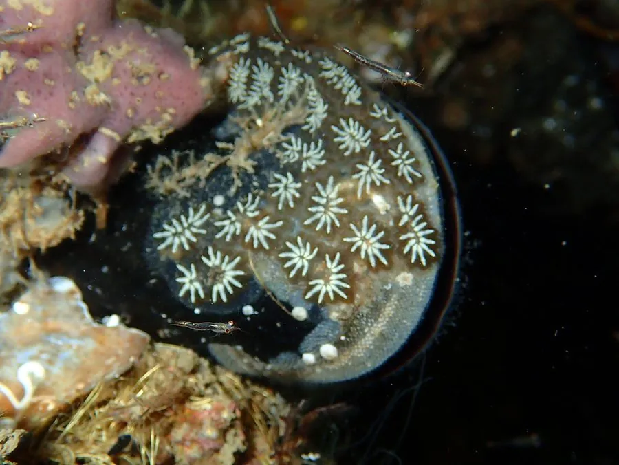

其他无脊椎动物 · 动物界
菊花海鞘 Botryllus schlosseri

由数个至十余个个虫排成星状小群的群体海鞘，颜色多变，附着于潮间带岩石与海藻，滤食并常污损船底。
- 分类
- 门脊索动物门纲海鞘纲目复鳃目科菊花海鞘科属菊花海鞘属
- 栖息环境
- 潮间带至水深数米的岩石、海藻、贝壳、船底与码头桩柱
- 地理分布
- 北大西洋、地中海和北太平洋温带海岸，中国北方沿海有记录
- 保护级别
- 无保护问题；为全球性污损生物，防除靠定期清理
物种志
菊花海鞘是群体生活的尾索动物，每个个体称为个虫，长约二至三毫米，呈长椭圆形，外包一层透明的胶质被囊。数个至十余个个虫围绕一个共同的出水孔排列，形成一朵星形或菊花形的小群，小群再彼此相连，铺成一片。群体颜色变化极多，有橙黄、紫红、墨绿、淡蓝和白色，常在同一块石头上出现几种颜色。
它分布于北大西洋、地中海和北太平洋的温带海岸，在中国北方沿海有记录，栖息在潮间带至水深数米的岩石、海藻、贝壳、船底和码头桩柱上。每个个虫各有一个入水孔，靠鳃裂上的纤毛滤食浮游藻类和有机颗粒，废水从共同的出水孔排出。它雌雄同体，既能通过出芽进行无性繁殖，也能进行有性生殖，幼虫浮游数小时后附着变态。它是全球性的污损生物，会附着在船底、养殖网笼和水下设施上，与贝类争夺空间和饵料，目前尚无保护级别。
形态与习性
- 个虫长二至三毫米，外包透明胶质被囊
- 群体数个至十余个个虫围成星状小群
- 颜色橙黄、紫红、墨绿、淡蓝或白色
- 栖息水层潮间带至水深数米的硬质基底
- 食性靠鳃裂纤毛滤食浮游藻类与有机颗粒
- 繁殖出芽无性繁殖与有性生殖并存
趣味知识
- 每个小星芒是几个个虫共用一个出水孔，像合住一间小屋。
- 它和鱼类同属脊索动物，幼体有一条脊索，长大后却固着不动。
- 船底那层五颜六色的小花，多半就是它和近亲铺出来的。